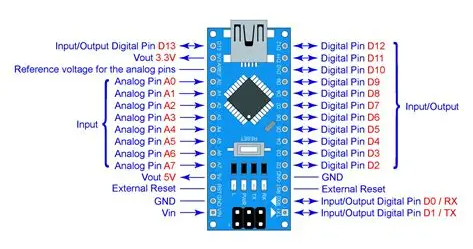

📟 Arduino Nano - Pinout Completo
Diagrama de distribución de pines y especificaciones técnicas del Arduino Nano
Diagrama de Pines

Especificaciones Técnicas
Microcontrolador
- Chip: ATmega328P (versión antigua) / ATmega328 (nuevo)
- Voltaje de operación: 5V
- Voltaje de entrada (recomendado): 7-12V
- Voltaje de entrada (límite): 6-20V
Entradas/Salidas Digitales
- Pines I/O digitales: 14 (D0-D13)
- Pines PWM: 6 (D3, D5, D6, D9, D10, D11)
- Corriente máxima por pin I/O: 40 mA
- Corriente máxima pin 3.3V: 50 mA
Entradas Analógicas
- Pines analógicos: 8 (A0-A7)
- Resolución ADC: 10 bits (0-1023)
- Voltaje de referencia: 5V (por defecto)
Memoria
- Flash Memory: 32 KB (2 KB usado por bootloader)
- SRAM: 2 KB
- EEPROM: 1 KB
Comunicación
- UART: 1 (pines 0 RX, 1 TX)
- SPI: Sí (pines 10 SS, 11 MOSI, 12 MISO, 13 SCK)
- I2C/TWI: Sí (pines A4 SDA, A5 SCL)
Otros
- Frecuencia de reloj: 16 MHz
- LED integrado: Pin 13
- Conexión USB: Mini-B o Micro-B (según versión)
- Dimensiones: 18mm x 45mm (muy compacto)
- Peso: ~7 gramos
Distribución de Pines
| Pin Físico | Arduino Pin | Función | Notas |
|---|---|---|---|
| D1/TX | 1 | TX (UART) | Transmisión serial |
| D0/RX | 0 | RX (UART) | Recepción serial |
| RESET | - | Reset | Reinicia el microcontrolador |
| GND | - | Tierra | Múltiples pines GND disponibles |
| D2-D12 | 2-12 | I/O Digital | D3, D5, D6, D9, D10, D11 con PWM |
| D13/SCK | 13 | I/O Digital / PWM / SPI | LED integrado + SPI Clock |
| 3V3 | - | Salida 3.3V | Máximo 50 mA |
| AREF | - | Referencia ADC | Voltaje de referencia analógico |
| A0-A7 | A0-A7 | Entrada Analógica | A4=SDA, A5=SCL (I2C) |
| VIN | - | Entrada alimentación | 7-12V recomendado |
| 5V | - | Salida 5V | Regulado desde VIN o USB |
⚠️ Diferencias con Arduino Uno
- Tamaño: Mucho más compacto (1/3 del tamaño del Uno)
- Montaje: Diseñado para breadboard (protoboard)
- Entradas analógicas: 8 en lugar de 6 (A0-A7 vs A0-A5)
- USB: Mini-B o Micro-B en lugar de USB-B
- Alimentación: Sin conector jack, alimentación por VIN o USB
💡 Casos de Uso Ideales
- Proyectos con espacio limitado
- Prototipado en breadboard
- Wearables y proyectos portátiles
- Robots pequeños y drones
- Sensores remotos con batería
- Proyectos educativos económicos